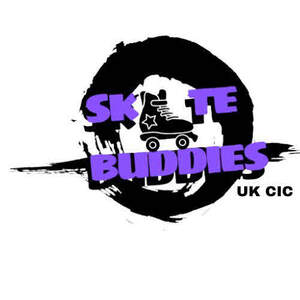

Trade Mark Journal No.2025/026 27 June 2025
UK00004216897 10 June 2025 (16,18,25,35,41)

- Class 16
- Advertising posters; Advertising publications; Advertising pamphlets; Advertising signs of cardboard; Advertising signs of paper; Paper; Publication paper; Envelope paper; Letterhead paper; Paper and cardboard; Advertisement boards of paper or cardboard; Bags and articles for packaging, wrapping and storage of paper, cardboard or plastics; Paper sheets [stationery]; Packing [cushioning, stuffing] materials of paper or cardboard; Printed paper labels; Clothing patterns; Training manuals; Printed publications; Printed matter; Printed matter for instructional purposes; Printed correspondence course materials; Printed paper signs; Printed promotional material; Printed booklets; Photographs [printed]; Printed photographs; Printed pamphlets; Printed stationery; Printed teaching material; Printed lessons; Printed advertisements; Forms, printed; Printed forms; Printed manuals; Printed reports; Printed timetables; Printed leaflets; Printed information sheets; Printed diagrams; Printed informational sheets; Printed informational cards; Printed flyers; Printed teaching materials; Printed certificates; Printed vouchers; Photographs; Pictures; Writing materials; Bookbinding materials; Printed packaging materials of paper; Paper teaching materials.
- Class 18
- Bags; Tote bags; Duffle bags; Drawstring bags; Carry-all bags; Kit bags; Travel bags; Bags for travel; Makeup bags; Gym bags; Cabin bags; Flight bags; Waist bags.
- Class 25
- Clothing; Jackets [clothing]; Ready-to-wear clothing; Linen clothing; Shorts [clothing]; Casual clothing; Jackets being sports clothing; Clothing for leisure wear; Bottoms [clothing]; Sports clothing; Printed t-shirts.
- Class 35
- Advertising and marketing; Online advertising; Promotion [advertising] of business; Promotion, advertising and marketing of on-line websites; Reproduction of files [paper]; Promotion of sports competitions and events; Advertising via electronic media and specifically the internet.
- Class 41
- Scriptwriting, other than for advertising purposes; Education and instruction; Education, teaching and training; Provision of education and training; Physical health education; Online education services; Education services relating to health; Sporting education services; Entertainment, sporting and cultural activities; Sporting activities; Sporting and recreational activities; Organisation of events for cultural, entertainment and sporting purposes; Instruction in sporting activities; Organisation of sporting activities and competitions; Organisation of entertainment and cultural events; Sports activities; Coaching services for sporting activities; Organising community sporting events; Organising of sports events; Provision and management of sporting events; Organisation of educational activities for summer camps; Sports training; Exercise [fitness] training services; Fitness and exercise training services; Health and fitness training; Providing on-line electronic publications; Providing on-line electronic publications [non-downloadable]; Providing electronic publications; Publication of printed matter; Publication of photographs; Publication of printed matter, other than publicity texts, in electronic form; Publication of printed matter, other than publicity texts.
Empress Gibbs